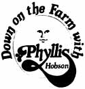

We aren't bookkeepers at heart (or we wouldn't have left the city for our little five-acre homestead on the backroads of Indiana in the first place). And we aren't out here to make a lot of money.
But we are here to stay. And, as we learned three years ago when we came within a hair of going broke and having to move back to town, we can only stay as long as each of our barnyard guests pays for his or her keep.
And that's why we finally sold the rabbits and rabbit hutches. We did it reluctantly, of course, because the bunnies had been our first livestock venture. But we did do it. After all, once we'd begun raising our own chickens and pork and beef, we really had lost our taste for rabbit . . . and the next thing you know, we had even started neglecting to breed the does regularly.
So we figured it up. The rabbits were eating expensive "boughten" hay and commercial feed all year long but (thanks to our neglect) producing only one or two litters a year. Which meant that, even counting the Easter sales, the rabbit enterprise wasn't paying its way.
The goats have worked out a little better. None of our does gives that rather mythical two gallons of milk a day, but they do average two or three quarts. (If one of the nannies can't produce at least that amount for a year, we sell her.)
The goat milk is strictly for our own use, but we do sell the kids. (We have good, crossbred, unregistered bloodlines, double kiddings are not uncommon, and we sell two-month-old bucks for from $10 to $15 and does for $15 to $20 each.)
According to our records, each of our four does produces milk worth $152 (which is what we'd pay at the store for the same amount of cow's milk) and returns an average of $20 annually in the sale of kids. That's $172 total benefit per doe.
From this we must subtract $16 per animal for hay (until we can rent or buy our own hayfield, we have to pay 70 cents a bale for the good hay we buy) and about $37 a year for grain (we hold this cost to about 101C a day per animal by mixing our own). Which adds up to $53 a year, per doe, in direct expenses.
And that means we're making a profit ($172-$53=$119) on each goat, right? Well, not quite. Since we prefer to keep our own buck, the milking does have to pay for his feed too. As well as feed for the young does coming on (we're still building our herd) and for the kids we haven't yet sold. And there's bedding expense for the whole herd, and the usual miscellaneous expenses. All in all, we figure the goats are just about breaking even.
It's a little hard to show on paper the benefits we receive from our beef and pork mini-operations, since we run both only for our own food. The expenses, however, look like this: A three-month-old calf costs us $75, two years' worth of grain adds up to $118, hay totals about $31, bedding $10, and butchering (900 pounds on the hoof at 104 a pound) runs $90 . . . for an all-up cost of $324. Since the meat from such an animal will dress out to about 550 pounds, this means we're paying approximately 59 cents a pound for our own farm-fattened beef. And that's not a bad buy today.
We do even better on homegrown pork and figure that it sets us back only about 304 a pound for all the ham, bacon, and lard we use.
Then again, we're quick to admit that we come out so well with our beef and pork because of our secret weapon spelled c-h-i-c-k-e-n. For most of each year, you see, our feathered flock buys feed for the whole barnyard.
The hens roam the woods (it isn't ours, but they roam it anyway) behind the chicken yard and they scratch in the compost heap behind the barn. As a result, customers rave about-and buy-every good-tasting egg we'll sell. This is about 14 dozen a week (at 50 cents a dozen, no matter what the supermarket is getting) and that $7 always goes a long way.
We calculate our benefit from each 100 baby chicks something like this: Fifty are eventually eaten as two-pound fryers worth 29 cents a pound (that's a total value for the 50 of $29). The other fifty-after a long career laying eggs-wind up as six-pound stewing hens (worth $87). And while they're laying, those hens produce $375 worth of eggs for sale and another $182 worth for our own use. Grand total: $673.
Those same 100 chickens cost us $15 and $1.80 in postage. And during their stay here on the farm they eat $173.16 worth of feed, $4 worth of grit, and use $5 worth of bedding.
That tallies up to $198.96 which, subtracted from the flock's income of $673, leaves us $474.04 ahead of the game with our White Rocks. Now we probably could do better than this if we tried, since White Rocks are not exactly the chicken kingdom's most prolific layers. But we're not out to set new laying records, just supply ourselves with the best meat in the world. The eggs we do get are a nice extra and we're satisfied with the numbers I've just given you.
All these figures, of course, charge our furred and feathered guests nothing for salt blocks or mineral . . . but allow them nothing for the valuable manure they produce, either. We figure that one balances the other pretty evenly. And our water, barn maintenance, and labor go down in the ledger book under "Hobbies". After all, what else would we be doing night and morning if we weren't taking care of our livestock?
To sum up then: At heart, we're still subsistence farmers who derive far more from the luxury of just living in the country than we'll ever make in cold, hard dollars from our little homestead. We have, however, learned the hard way that we can stay out here on the land only as long as we make each and every one of our barnyard denizens at least earn his or her keep. And that's exactly what we do.
|
 |
|
|